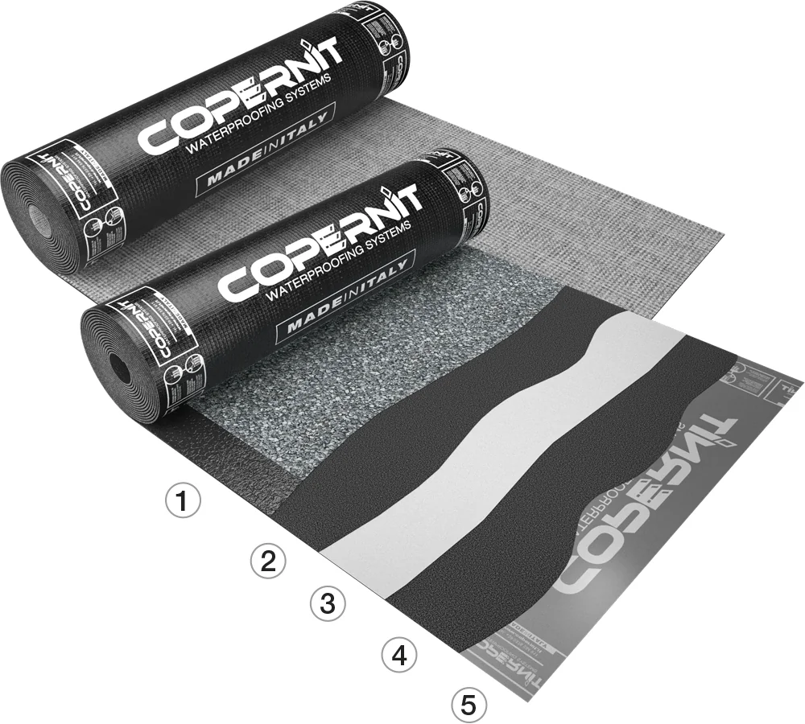

Astropol
APP -10 °C · Poliestere filo continuo stabilizzato
Membrana con mescola elasto-plastomerica ottenuta dalla modifica di bitume distillato con poliolefine e copolimeri selezionati, con buona flessibilità alle basse temperature ed elevata adesività. Resistente all'invecchiamento, garantisce tenuta dei sormonti e posa facile.

Astropol Biarmato
APP -10 °C · Biarmato
Membrana con doppia armatura (velo di vetro e tessuto non tessuto in poliestere), buona flessibilità alle basse temperature ed elevata adesività. La doppia armatura garantisce stabilità dimensionale, ideale per la posa su strato termoisolante.

Tecnoroof
APP -10 °C · Poliestere composito
Membrana con mescola plastomerica che abbina buona adesività a facilità di posa del rotolo. Il buon comportamento sia alle basse che alle alte temperature la rende adatta ai climi con forte escursione termica.
Supergum Plus
APP -10 °C · Poliestere composito
Membrana con mescola plastomerica che garantisce facilità di applicazione in diverse condizioni climatiche e perfetta adesione delle giunzioni. Buon rapporto peso/spessore e resistenza all'invecchiamento.
Sintopol
APP -5 °C · Poliestere composito
Membrana con mescola plastomerica che garantisce facilità di applicazione in diverse condizioni climatiche e perfetta adesione delle giunzioni, adatta a svariate soluzioni applicative.
Extrabit
APP -5 °C · Poliestere composito
Membrana con mescola plastomerica che garantisce facilità di applicazione e perfetta adesione delle giunzioni, con ottima tenuta del manto impermeabile e buona velocità di posa.

Extrabit Multicolor
APP -5 °C · Poliestere composito
Stessa mescola plastomerica di Extrabit, con autoprotezione Mineral Multicolor: colori e granulometrie distribuiti in modo disomogeneo e casuale, per una finitura unica su ogni rotolo.

Sintoglass
APP -5 °C · Velo vetro
Membrana con mescola plastomerica e armatura in feltro di vetro rinforzato, con facilità di applicazione, ottima tenuta del manto e buona velocità di posa.

Coperpol Extra
APAO -35 °C · Poliestere filo continuo stabilizzato
Prodotto al top della gamma Copernit: mescola APAO con elevata flessibilità alle basse temperature, elevata adesività e resistenza all'invecchiamento ai raggi UV, per applicazioni specialistiche anche in condizioni climatiche estreme.
Coperpol 18 HP
APAO -25 °C · Poliestere filo continuo stabilizzato
Mescola APAO di classe superiore, ottima flessibilità alle basse temperature, elevata adesività e resistenza ai raggi UV, per applicazioni professionali anche gravose.
Coperpol
APAO -20 °C · Poliestere filo continuo stabilizzato
Mescola APAO con buona flessibilità alle basse temperature, elevata adesività e resistenza all'invecchiamento ai raggi UV, indicata per applicazioni professionali.

Tecnopol
APAO -15 °C · Poliestere filo continuo stabilizzato
Mescola elasto-plastomerica APAO con buona flessibilità alle basse temperature, elevata adesività e resistenza ai raggi UV, pensata per una posa facile con risultati di qualità.

Coperflex Pro
SBS -35 °C · Poliestere filo continuo stabilizzato
Membrana elastomerica SBS di fascia più alta della linea, molto elastica e flessibile alle basse temperature, per uso professionale anche in condizioni climatiche estreme e forti sollecitazioni strutturali.
Coperflex
SBS -25 °C · Poliestere filo continuo stabilizzato
Membrana elastomerica SBS con elasticità e resistenza all'invecchiamento termico, flessibilità a freddo fino a -25°C, per applicazioni professionali anche in condizioni climatiche gravose.
Astroflex
SBS -20 °C · Poliestere filo continuo stabilizzato
Membrana elastomerica SBS elastica e resistente all'invecchiamento termico, flessibile fino a -20°C, con buona tenuta dei sormonti e posa agevole.
Astroflex Tech
SBS -20 °C · Poliestere composito
Variante di Astroflex con armatura in poliestere composito. Garantisce velocità di posa, ridotto uso della fiamma, ottima adesività al supporto e tenuta duratura dei sormonti.

MFT Mono
APAO -20 °C / SBS -20 °C · Poliestere filo continuo stabilizzato
Membrana multistrato che combina mescola APAO in superficie (resistenza a caldo e raggi UV) e mescola SBS sul lato inferiore (flessibilità a freddo e adesività in posa).
MFT Pro
APAO -15 °C / SBS -25 °C · Poliestere filo continuo stabilizzato
Stessa tecnologia a tripla mescola di MFT Mono, con prestazioni superiori sul lato SBS: maggiore flessibilità a freddo e forte adesività, indicata per il rifacimento di vecchi manti deteriorati.

MFT Pro 25
APAO -15 °C / SBS -25 °C · Poliestere filo continuo stabilizzato
Membrana Mineral con tripla mescola APAO/SBS, pensata per un'elevata resistenza alla grandine: supera il test EN 13583 (laboratorio SKZ-Testing, Germania) resistendo a chicchi a 180 km/h.

MFT Pro 25 B-Fire
APAO -15 °C / SBS -25 °C · Bᵣᵒᵒf(t2)
Variante di MFT Pro 25 con le stesse caratteristiche antigrandine, più la certificazione di resistenza al fuoco esterno Bᵣᵒᵒf(t2) (EN 13501-5). Adatta anche a coperture con impianti fotovoltaici.

Coperlastic Plus
Base acqua
Membrana liquida multifunzionale a base acqua, con bitumi modificati con polimeri e filler. Una volta essiccata offre elevata elasticità, ottima adesione e buona tenuta anche in presenza di ristagni d'acqua.

Coperpur Flashing
Base solvente
Membrana liquida monocomponente poliuretano-bituminosa al solvente, resistente alla pioggia in tempi brevi e senza bisogno di primer. Si applica su profili complessi e diversi substrati.

Coperbit W
Base acqua
Membrana liquida elastomero-bituminosa monocomponente e tixotropica, in emulsione acquosa pronta all'uso. Una volta essiccata è elastica, ben adesa al supporto e resistente ai ristagni d'acqua.

Coperbit S
Base solvente
Membrana liquida elastomero-bituminosa al solvente, pronta all'uso e applicabile a freddo. Essicca più rapidamente delle emulsioni, con buona resistenza all'acqua stagnante anche in inverno.
Coperbit Color
Base acqua
Membrana liquida elastomerica colorata e decorativa a base di copolimeri acrilici, riduce la carbonatazione del calcestruzzo. Pellicola elastica e resistente agli agenti atmosferici, nei colori bianco, grigio, rosso e verde.
Coperbit Color Fiber
Base acqua
Versione fibrata e pedonabile di Coperbit Color: le fibre aumentano la resistenza al calpestio continuo e alle sollecitazioni meccaniche, nei colori grigio e rosso.
Coper Solar Fiber FR
Base acqua
Membrana liquida fibrata bianca riflettente per sistemi Cool Roof ad alta riflettanza solare (SRI 97%), certificata resistente al fuoco esterno Broof(t2), adatta anche a coperture con impianti fotovoltaici.